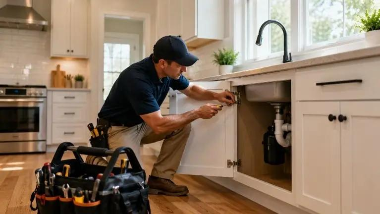
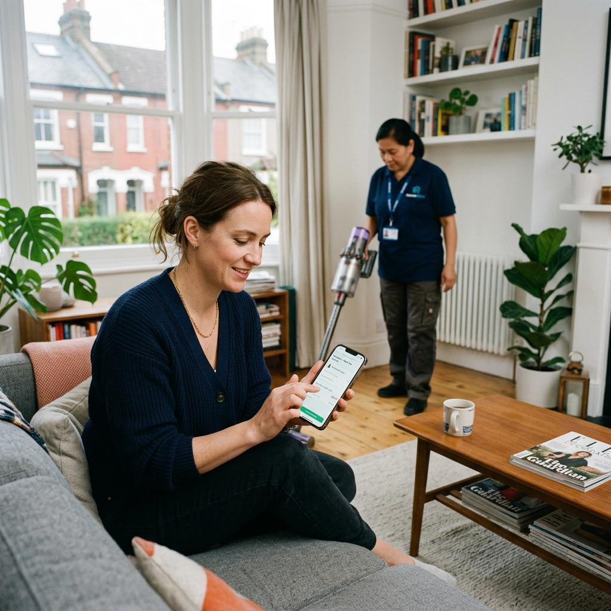

Post what you need, discover trusted local professionals, compare your options, and get your home task moving.

Getting help doesn't need to be complicated. TaskLocal keeps the process simple from start to finish.
Tell us what needs to be done, where you need help and when you would like the task completed.
Create a taskExplore professionals who offer the service you need in your local area.
Explore prosReview profiles, ratings, experience, availability and other useful details.
Compare profilesDiscuss the details directly and arrange the work with the professional you choose.
Get started
Whether it is a quick repair, cleaning job or something bigger around the house, TaskLocal gives you a simple way to find and connect with local help.
Add the task details, location and preferred timing so professionals understand the job.
Explore local professionals offering the service you are looking for.
Check experience, ratings, availability, location and other profile information.
Contact the professional and discuss the details before arranging the task.
Connect with people nearby who are looking for the services you provide.
Add your services, experience, location and other information customers need to know.
Build your presenceFind tasks that match your skills and are available in the areas you serve.
Find suitable workDiscuss the task, timing and requirements directly with the customer.
Discuss the detailsComplete tasks, build your reputation and become easier for local customers to discover.
Grow your local networkOnce your task is posted, the important details stay clear so you can review your options and decide how you want to proceed.
Need help fixing a leaking tap in the kitchen. Looking for an experienced local professional.
Compare the information that matters and choose a professional based on what fits your task.

Every task can have different requirements. Use available profile information to understand which professionals may suit your needs.
TaskLocal brings customers and local professionals together with useful information, clear communication and a community-focused approach.
Understand a professional's services, experience, ratings and availability before starting a conversation.
 02
02
Discuss your requirements directly so expectations, timing and task details are easier to understand.
 03
03
Keep everyday work connected to professionals and customers within the communities they serve.
TaskLocal helps people discover and connect with local professionals. Always discuss the work details, pricing, timing and expectations before arranging a task.
Post your task, explore local professionals and find the right help for your home.